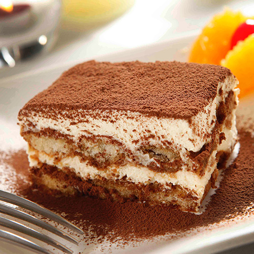

Recepten
Carrot cake
Deze cake wordt bereid met geraspte wortels, die een natuurlijke zoetheid en een zachte consistentie aan het gebak geven. De toevoeging van specerijen zoals kaneel en nootmuskaat versterkt de diepte van de smaak.
Bekijk recept
Tiramisu
Dit heerlijke dessert combineert lagen van luchtige mascarponekaas, doordrenkt met koffie en cacaopoeder, met in koffie gedrenkte lange vingers, die een zachte, sponzige textuur krijgen.
Bekijk recept